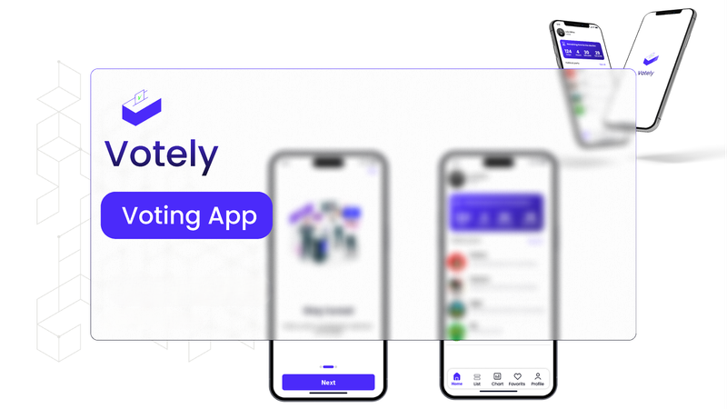

Our Projects

ChroniCARE – by Ahmed
A telemedicine and health tracking platform that enables users to book doctors, report symptoms, and track ambulances in real-time. Built with React and Appwrite.
View on GitHub
UX Redesign Case Study – by Nathaniel
Redesigned an existing educational website to improve usability and visual appeal. Focused on layout structure, accessibility, and mobile responsiveness using Figma.
View on Behance

Smart Voting System – by Samwell
Built a secure online voting platform with admin and voter roles, real-time result computation, and eligibility verification. Backend powered by Node.js and MongoDB.
View on GitHub